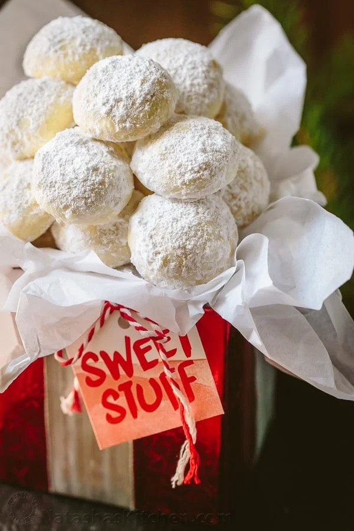

Almond Snowball Cookies

Description
These melt-in-your mouth cookies are so easy to make and provide the ideal complement to your afternoon tea. Taste's like freshly-baked butter cookies but the powdered sugar on the outside brings an added sweetness that can satisfy any sweet tooth.
Note: you can replace the almond flour with almond meal if you're having trouble finding the former.
Ingredients
- 226.8g unsalted butter (softened at room temperature)
- 60g powdered sugar, plus 168g more for rolling the cookies
- 1 tsp vanilla extract
- 250g all purpose flour
- 1/2 tsp fine salt
- 112g almond flour
- 1/2 tbsp orange zest
Steps
- Preheat the oven to 204°C/400°F. Line a 3/4 size cookie sheet or 2 regular cookie sheets with parchment paper.
- In the bowl of a stand mixer fitted with whisk attachment, cream together 226.8g butter, 60g cup powdered sugar and 1 tsp vanilla, until smooth.
- Switch to paddle attachment and gradually mix in 250g all purpose flour and 1/2 tsp salt. Once incorporated, add 112g almond flour. 1/2 Tbsp orange zest and mix until well blended. The dough will stick slightly to the spatula but not to finger tips. If very sticky, add 1-2 Tbsp more flour.
- Shape dough into 2.54 cm balls (a small ice cream scoop makes it easy and exact). Place them on prepared baking sheet 2.54 cm apart. You should get 38-40 cookies. Don't make them too large or they won't bake through properly. Bake 11-13 min, or until bottoms are golden and edges are barely golden (I bake 11 min for softer cookies). Remove from baking sheet and cool 5 min.
- Fill a bowl with powdered sugar and roll the cookies in it while they are still warm (not hot). Transfer cookies to wire rack to cool completely.
- Once cookies are at room temp, roll in powdered sugar again or dust the tops with a mini sieve for a snowy look.
Homepage